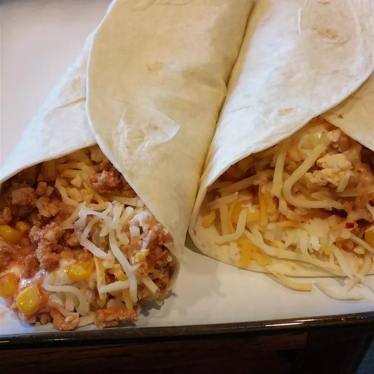

Turkey Burrito

Description
Easy to make, these special low-fat burritos taste awesome! You don't eat red meat, but love burritos? Well, you can't taste the difference here.
These are medium spicy, not fire hot!
Ingredients
- 1 pound ground turkey
- 2 (7.75 ounce) cans Mexican-style hot tomato sauce (such as El Pato®)
- 1 (15.25 ounce) can whole kernel corn, drained
- ½ small onion, diced
- 1 (16 ounce) can fat-free refried beans
- 1 (16 ounce) container fat-free sour cream
- ¾ cup shredded reduced-fat Cheddar cheese
- 6 (10 inch) flour tortillas